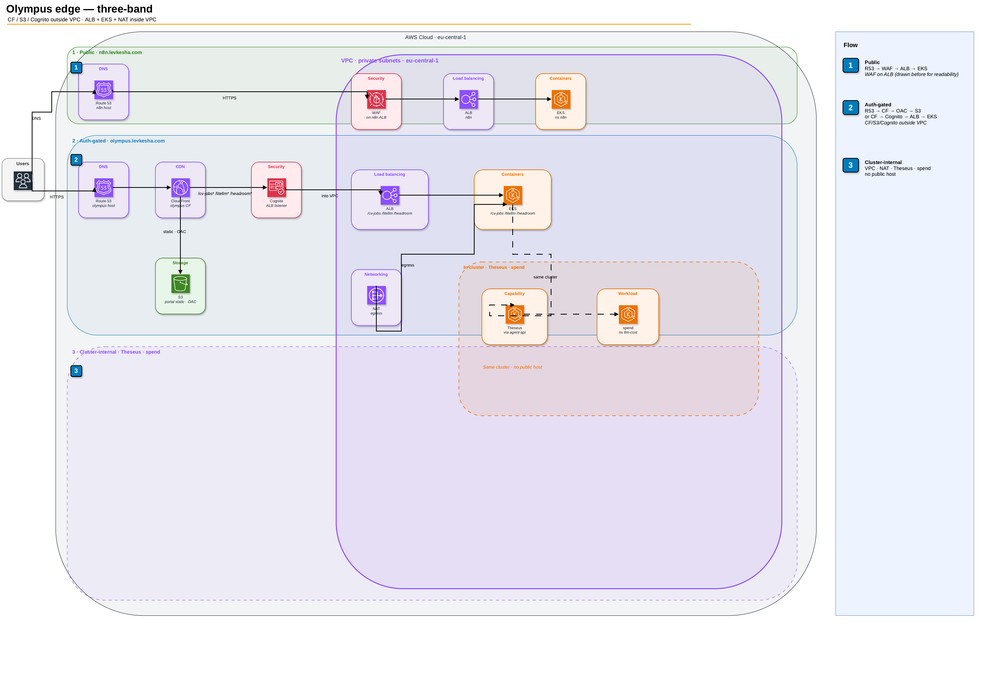
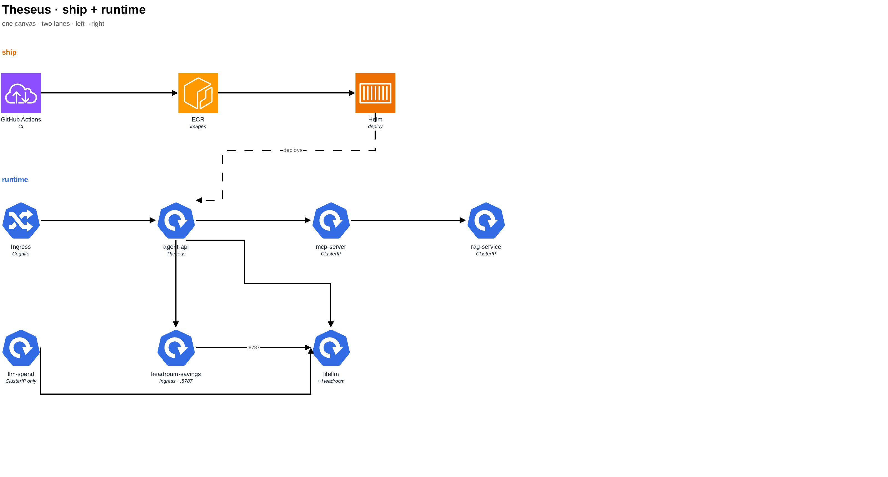
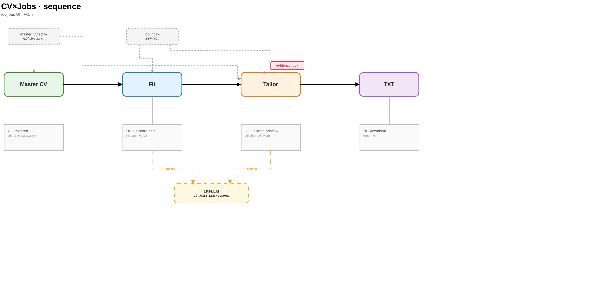
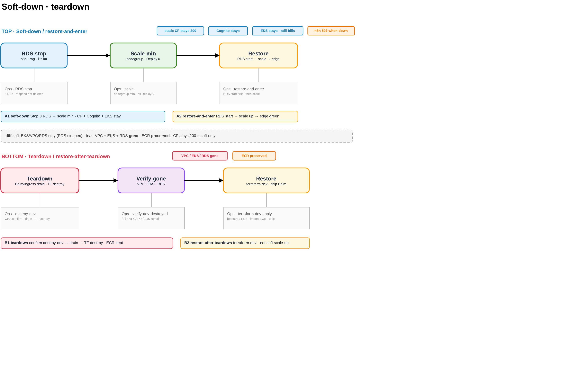

Architecture
Olympus edge — three-band
CF / S3 / Cognito outside VPC · ALB + EKS + NAT inside · eu-central-1

Theseus · ship + runtime
one canvas · two lanes · left → right · dev-cluster · eu-central-1

CV×Jobs
B1 · Architecture detail · sequence

Spend
B2 · ns llm-cost loop

Soft-down / restore
B3 · ops · Proof-optional place
